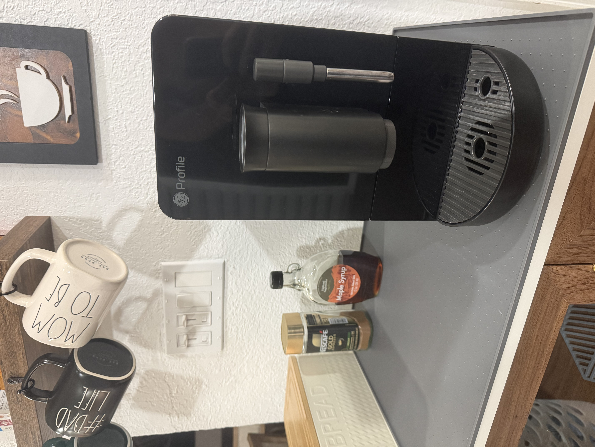
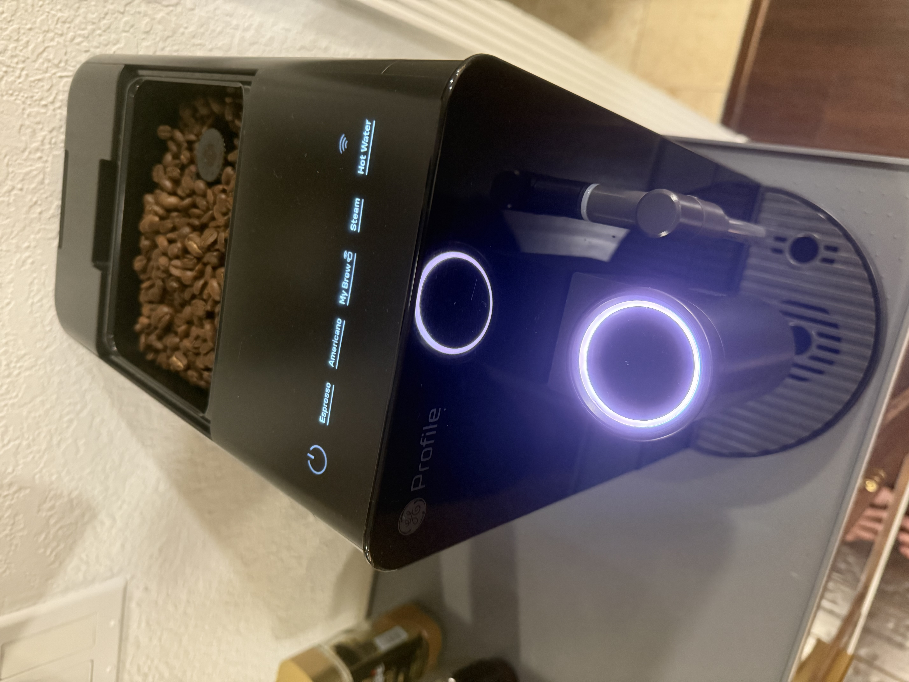

Dad Recommends · Kitchen
Dad's Coffee
Every morning I need a jumpstart to get the kids to school, handle calls, power through home projects. For years my Saeco was perfect—until my wife wasn't. Turns out trading tinkering time for actual time is the better deal.

The Setup I Had
For over a decade, I ran a 2000s Saeco Starbucks Barista—a semi-automatic machine that required grind, tamp, pull. It made exceptional espresso. The kind of coffee that actually tastes like coffee. I loved the ritual. Grinding beans fresh, dialing in the grind, watching the shot pull. That's dad time, right there.
Then I got married. And marriage teaches you things.
The Wife Factor
My wife's complaint was simple: "Why do I have to wait ten minutes for you to make coffee while everyone needs breakfast?" Fair point. But in my mind, quality requires effort. This is how espresso works. Take shortcuts and you get bitter, burnt, or watery coffee. Non-negotiable.
So we compromised. For years. Then one day she stopped asking and started shopping.
Why I Switched to the GE Profile
The GE Profile Automatic Espresso Machine does something wild: it gets great espresso out in under 90 seconds. The machine grinds, doses, tamps, and extracts automatically. All you do is fill water, add beans, press a button, and grab your cup. The 20-bar pump pressure and adjustable grind settings mean the coffee doesn't taste like a convenience sacrifice—it actually tastes good.
Don't tell anyone, but I love it. The espresso is smooth, consistent, and ready before my brain is. And I just got 5–10 minutes back every morning.
What Actually Changed
I thought I'd miss the ritual. Turns out the ritual I actually valued was drinking good coffee, not making coffee slowly. The GE Profile does the first part better. The second part was just friction.
My kids eat breakfast on time. My wife drinks coffee before I leave for work. I'm not late to morning calls. And the espresso is the best it's been in years—because now I'm not rushing a 10-minute process into an impossible timeline.
The Real Win
This is a $500+ machine, and I'd make the same choice again. Not because it's fancy. Not because it has WiFi. Because it bought back time in the morning, and morning time with family is the currency that matters when you're a dad.
The Saeco will always be a beautiful machine. But the GE Profile is the one that works in real life.


GE Profile Automatic Espresso Machine
20-bar pump pressure, brews in under 90 seconds, five adjustable grind sizes, WiFi-connected customization. All the espresso quality, none of the tamping ceremony.
View on Amazon